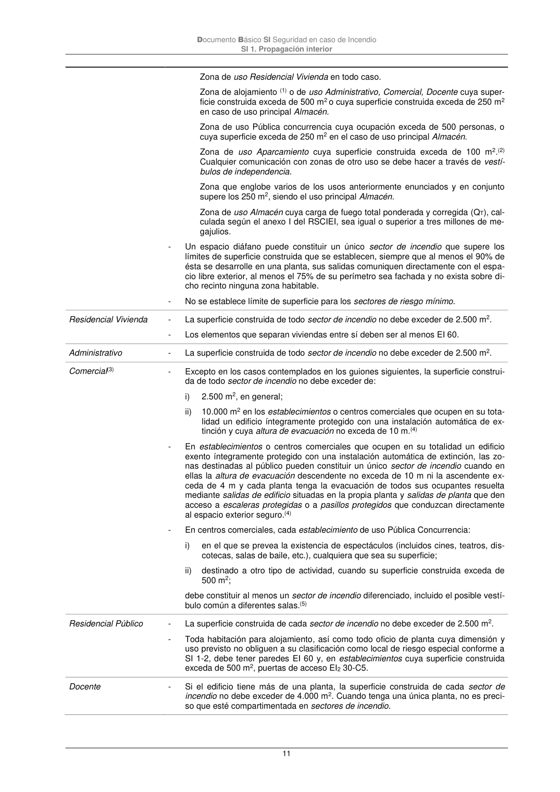
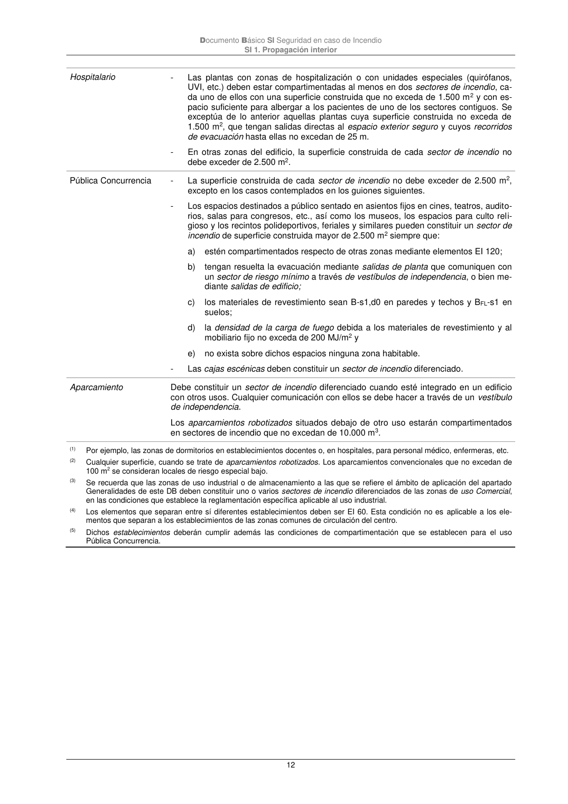
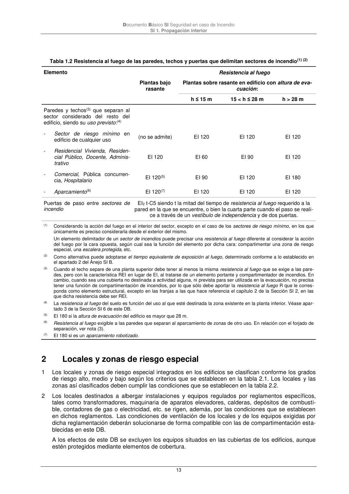

DB-SI · 1 Compartimentación en sectores de incendio · versión 2025-03-04 · capa oficial
Formatos: JSON compacto · Markdown · PDF fuente
Ámbito del documento · texto del ámbito · documento y tablas
ID técnico a0031 · PDF pág. 10-13 · jerarquía no validada por persona · contrastado con el literal de la página 10 (marcador PDF); no validado por persona · padre: a0030
Compartimentación en sectores de incendio 1 Los edificios se deben compartimentar en sectores de incendio según las condiciones que se esta- blecen en la tabla 1.1 de esta Sección. Las superficies máximas indicadas en dicha tabla para los sectores de incendio pueden duplicarse cuando estén protegidos con una instalación automática de extinción. 2 A efectos del cómputo de la superficie de un sector de incendio, se considera que los locales de riesgo especial, las escaleras y pasillos protegidos, los vestíbulos de independencia y las escaleras compartimentadas como sector de incendios, que esténcontenidos en dicho sector no forman parte del mismo. 3 La resistencia al fuego de los elementos separadores de los sectores de incendio debe satisfacer las condiciones que se establecen en la tabla 1.2 de esta Sección. Como alternativa, cuando, conforme a lo establecido en la Sección SI 6, se haya adoptado el tiempo equivalente de exposición al fuego para los elementos estructurales, podrá adoptarse ese mismo tiempo para la resistencia al fuego que deben aportar los elementos separadores de los sectores de incendio. 4 Las escaleras y los ascensores que comuniquen sectores de incendio diferentes o bien zonas de riesgo especial con el resto del edificio estarán compartimentados conforme a lo que se establece en el punto 3 anterior. Los ascensores dispondrán en cada acceso, o bien de puertas E 30(*) o bien de un vestíbulo de independencia con una puerta EI2 30-C5, excepto en zonas de riesgo especial o de uso Aparcamiento, en las que se debe disponer siempre el citado vestíbulo. Cuando, considerando dos sectores, el más bajo sea un sector de riesgo mínimo, o bien si no lo es se opte por disponer en él tanto una puerta EI2 30-C5 de acceso al vestíbulo de independencia del ascensor, como una puer- ta E 30 de acceso al ascensor, en el sector más alto no se precisa ninguna de dichas medidas. Tabla 1.1 Condiciones de compartimentaciónen sectores de incendio Uso previsto del edifi- cio o establecimiento Condiciones En general - Todo establecimiento debe constituir sector de incendio diferenciado del resto del edificio excepto, en edificios cuyo uso principal sea Residencial Vivienda, los esta- blecimientos cuya superficie construida no exceda de 500 m2 y cuyo uso sea Docen- te, Administrativo o Residencial Público. - Toda zona cuyo uso previsto sea diferente y subsidiario del principal del edificio o establecimiento en el que esté integrada debe constituir un sector de incendio dife- rente cuando supere los siguientes límites: (*)Determinado conforme a la norma UNE-EN 81-58:2004 “Reglas de seguridad para la construcción e instalación de ascensores. Exámenes y ensayos – Parte 58: Ensayo de resistencia al fuego de las puertas de piso”. Documento Básico SI Seguridad en caso de Incendio SI 1. Propagación interior 11 Zona de uso Residencial Vivienda en todo caso. Zona de alojamiento (1) o de uso Administrativo, Comercial, Docente cuya super- ficie construida exceda de 500 m2 o cuya superficie construida exceda de 250 m2 en caso de uso principal Almacén. Zona de uso Pública concurrencia cuya ocupación exceda de 500 personas, o cuya superficie exceda de 250 m2 en el caso de uso principal Almacén. Zona de uso Aparcamiento cuya superficie construida exceda de 100 m2.(2) Cualquier comunicación con zonas de otro uso se debe hacer a través de vestí- bulos de independencia. Zona que englobe varios de los usos anteriormente enunciados y en conjunto supere los 250 m2, siendo el uso principal Almacén. Zona de uso Almacén cuya carga de fuego total ponderada y corregida (QT), cal- culada según el anexo I del RSCIEI, sea igual o superior a tres millones de me- gajulios. - Un espacio diáfano puede constituir un único sector de incendio que supere los límites de superficie construida que se establecen, siempre que al menos el 90% de ésta se desarrolle en una planta, sus salidas comuniquen directamente con el espa- cio libre exterior, al menos el 75% de su perímetro sea fachada y no exista sobre di- cho recinto ninguna zona habitable. - No se establece límite de superficie para los sectores de riesgo mínimo. Residencial Vivienda - La superficie construida de todo sector de incendio no debe exceder de 2.500 m2. - Los elementos que separan viviendas entre sí deben ser al menos EI 60. Administrativo - La superficie construida de todo sector de incendio no debe exceder de 2.500 m2. Comercial(3) - Excepto en los casos contemplados en los guiones siguientes, la superficie construi- da de todo sector de incendio no debe exceder de: i) 2.500 m2, en general; ii) 10.000 m2 en los establecimientos o centros comerciales que ocupen en su tota- lidad un edificio íntegramente protegido con una instalación automática de ex- tinción y cuya altura de evacuación no exceda de 10 m.(4) - En establecimientos o centros comerciales que ocupen en su totalidad un edificio exento íntegramente protegido con una instalación automática de extinción, las zo- nas destinadas al público pueden constituir un único sector de incendio cuando en ellas la altura de evacuación descendente no exceda de 10 m ni la ascendente ex- ceda de 4 m y cada planta tenga la evacuación de todos sus ocupantes resuelta mediante salidas de edificio situadas en la propia planta y salidas de planta que den acceso a escaleras protegidas o a pasillos protegidos que conduzcan directamente al espacio exterior seguro.(4) - En centros comerciales, cada establecimiento de uso Pública Concurrencia: i) en el que se prevea la existencia de espectáculos (incluidos cines, teatros, dis- cotecas, salas de baile, etc.), cualquiera que sea su superficie; ii) destinado a otro tipo de actividad, cuando su superficie construida exceda de 500 m2; debe constituir al menos un sector de incendio diferenciado, incluido el posible vestí- bulo común a diferentes salas.(5) Residencial Público - La superficie construida de cada sector de incendio no debe exceder de 2.500 m2. - Toda habitación para alojamiento, así como todo oficio de planta cuya dimensión y uso previsto no obliguen a su clasificación como local de riesgo especial conforme a SI 1-2, debe tener paredes EI 60 y, en establecimientos cuya superficie construida exceda de 500 m2, puertas de acceso EI2 30-C5. Docente - Si el edificio tiene más de una planta, la superficie construida de cada sector de incendio no debe exceder de 4.000 m2. Cuando tenga una única planta, no es preci- so que esté compartimentada en sectores de incendio. Documento Básico SI Seguridad en caso de Incendio SI 1. Propagación interior 12 Hospitalario - Las plantas con zonas de hospitalización o con unidades especiales (quirófanos, UVI, etc.) deben estar compartimentadas al menos en dos sectores de incendio, ca- da uno de ellos con una superficie construida que no exceda de 1.500 m2 y con es- pacio suficiente para albergar a los pacientes de uno de los sectores contiguos. Se exceptúa de lo anterior aquellas plantas cuya superficie construida no exceda de 1.500 m2, que tengan salidas directas al espacio exterior seguro y cuyos recorridos de evacuación hasta ellas no excedan de 25 m. - En otras zonas del edificio, la superficie construida de cada sector de incendio no debe exceder de 2.500 m2. Pública Concurrencia - La superficie construida de cada sector de incendio no debe exceder de 2.500 m2, excepto en los casos contemplados en los guiones siguientes. - Los espacios destinados a público sentado en asientos fijos en cines, teatros, audito- rios, salas para congresos, etc., así como los museos, los espacios para culto reli- gioso y los recintos polideportivos, feriales y similares pueden constituir un sector de incendio de superficie construida mayor de 2.500 m2 siempre que: a) estén compartimentados respecto de otras zonas mediante elementos EI 120; b) tengan resuelta la evacuación mediante salidas de planta que comuniquen con un sector de riesgo mínimo a través de vestíbulos de independencia, o bien me- diante salidas de edificio; c) los materiales de revestimiento sean B-s1,d0 en paredes y techos y BFL-s1 en suelos; d) la densidad de la carga de fuego debida a los materiales de revestimiento y al mobiliario fijo no exceda de 200 MJ/m2 y e) no exista sobre dichos espacios ninguna zona habitable. - Las cajas escénicas deben constituir un sector de incendio diferenciado. Aparcamiento Debe constituir un sector de incendio diferenciado cuando esté integrado en un edificio con otros usos. Cualquier comunicación con ellos se debe hacer a través de un vestíbulo de independencia. Los aparcamientos robotizados situados debajo de otro uso estarán compartimentados en sectores de incendio que no excedan de 10.000 m3. (1) Por ejemplo, las zonas de dormitorios en establecimientos docentes o, en hospitales, para personal médico, enfermeras, etc. (2) Cualquier superficie, cuando se trate de aparcamientos robotizados. Los aparcamientos convencionales que no excedan de 100 m2 se consideran locales de riesgo especial bajo. (3) Se recuerda que las zonas de uso industrial o de almacenamiento a las que se refiere el ámbito de aplicación del apartado Generalidades de este DB deben constituir uno o varios sectores de incendio diferenciados de las zonas de uso Comercial, en las condiciones que establece la reglamentación específica aplicable al uso industrial. (4) Los elementos que separan entre sí diferentes establecimientos deben ser EI 60. Esta condición no es aplicable a los ele- mentos que separan a los establecimientos de las zonas comunes de circulación del centro. (5) Dichos establecimientos deberán cumplir además las condiciones de compartimentación que se establecen para el uso Pública Concurrencia. Documento Básico SI Seguridad en caso de Incendio SI 1. Propagación interior 13 Tabla 1.2 Resistencia al fuego de las paredes, techos y puertas que delimitan sectores de incendio(1) (2) Elemento Resistencia al fuego Plantas bajo rasante Plantas sobre rasante en edificio con altura de eva- cuación: h ≤ 15 m



PDF fuente redistribuible: copia fiel enlazada en esta página (SHA256 verificado).